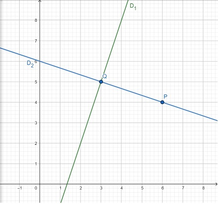

Exercices de vérification
- Trouver l'équation des droites si ...
- elle est parallèle à la droite
 et passe par le point
et passe par le point ) .
.
- elle est perpendiculaire à
 et la croise sur l'axe des
et la croise sur l'axe des  à une hauteur de
à une hauteur de  .
.
- Déterminer la position relative des droites suivantes. Si elles sont sécantes, déterminer également le point d'intersection.


- Calculer la distance entre le point
) et
la droite
et
la droite  .
.
Réponses :
Afficher
 |
 |
- parallèles distinctes
- sécantes en
)
- parallèles confondues
- On cherche donc la droite
 qui passe par
qui passe par ) .
On trouve
.
On trouve  .
.
Le point de rencontre de  et
et  est
est ) .
.
Finalement, la distance est ^2+(5-4)^2}=\sqrt{10}) .
.
